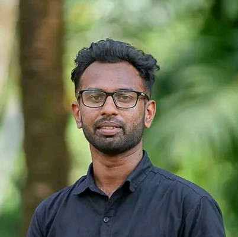

Kavishka Deshan

Summary
Passionate web developer from Sri Lanka with a focus on building user-friendly, efficient, and responsive websites and applications. Skilled in HTML, CSS, and JavaScript with a dedication to lifelong learning and quality coding practices.
Education
- Bachelor Information and Comunication technology – University of Colombo (2023 – )
- Diploma in English (2022 – 2023)
Work Experience
-
Graphic Designer – KavishkaLK (2023 – Present)
- Designe thumbnails
- Design Posts
Skills
- HTML, CSS, JavaScript
- Responsive Design
- Git & GitHub
- Photoshop
Awards & Certifications
- Certified Frontend Developer – FreeCodeCamp